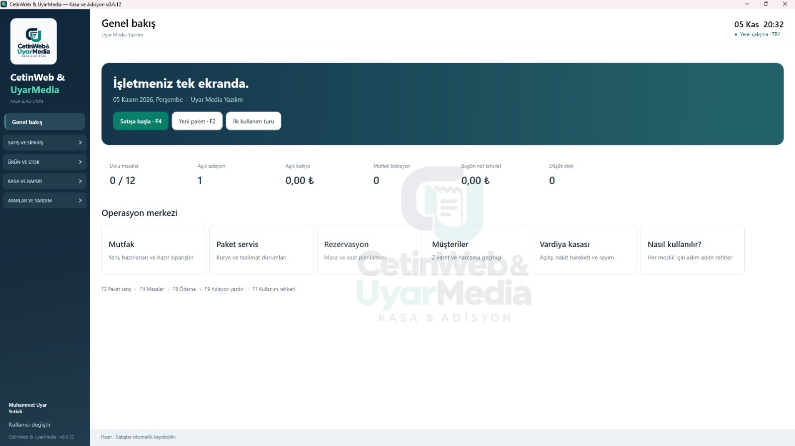
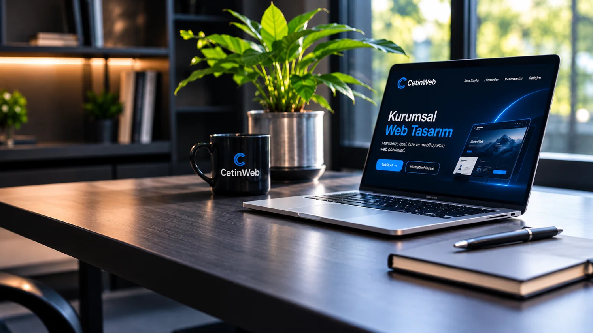
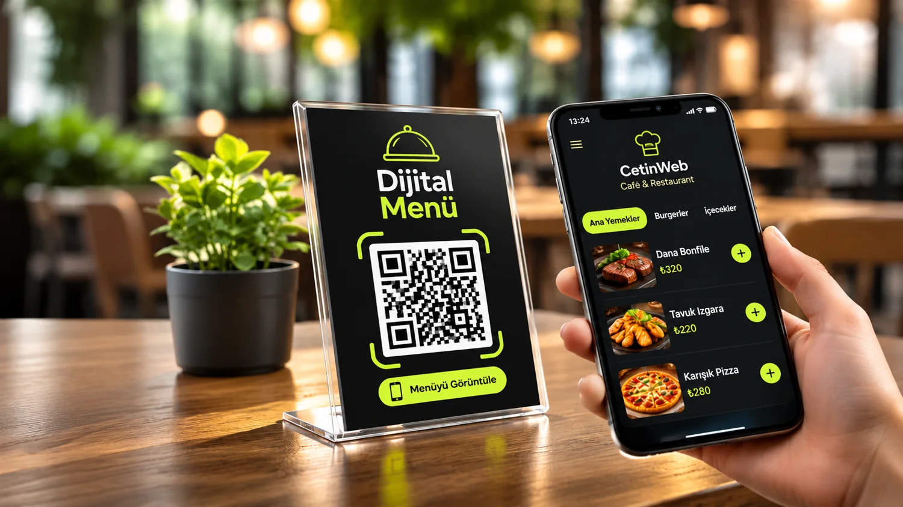

Masa ve sipariş
Masaları yönetin, siparişleri takip edin ve adisyonları tek ekrandan kontrol edin.
Detayları görMasadan mutfağa, adisyondan gün sonuna. Kasapos, restoranınızın günlük işleyişini tek bir ekranda toplar.

İşletmenizin en sık kullandığı işlemleri tek programdan yönetin.
Masaları yönetin, siparişleri takip edin ve adisyonları tek ekrandan kontrol edin.
Detayları görNakit ve kart ödemeleri, indirimler ve satış geçmişi bir arada.
Detayları görSatışla otomatik stok düşümü, kategori ve malzeme eşleştirmesi.
Detayları görMüşteri bilgileri, adres ve sipariş durumlarını kolayca yönetin.
Detayları görSiparişleri mutfağa iletin; hazırlık ve teslim süreçlerini takip edin.
Detayları görCiro, tahsilat, indirim ve gün sonu sonuçlarını inceleyin.
Detayları görRezervasyon, personel yetkileri, yedekleme, kendi geliştirdiğimiz Kasapos Connect Android uygulaması ve diğer tüm modülleri keşfedin.
Kasapos'un yanında işletmenizin internetteki görünürlüğü ve müşteri deneyimi için de çözümler geliştiriyoruz.
Masa, sipariş, adisyon, stok ve raporlar. İşletmeniz için tek sistem.


02 — WEB TASARIMMarkanıza özel, hızlı ve mobil uyumlu web deneyimleri.

03 — DİJİTAL MENÜMenünüzü müşterilerinizin telefonuna taşıyın.
İçerik planlaması ve hesap yönetimiyle markanızı görünür kılın.
Tek seferlik ödeme, yıllık lisans yenileme ücreti olmadan kullanım.
Tek seferlik ödeme. Yıllık lisans yenilemesi yok.
İşletmeniz için donanım ve yazılım bir arada.
Kasapos'u satın almadan önce bilmek isteyebileceğiniz temel konuları burada yanıtladık.
Başka bir sorunuz mu var? Bize ulaşın